Setlists and segues
Run a whole set, with songs flowing into each other.
- Setlists tab → New setlist, give it a name.
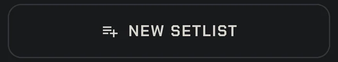
- ADD SONGS, tick them, Add. Drag the handles to reorder.
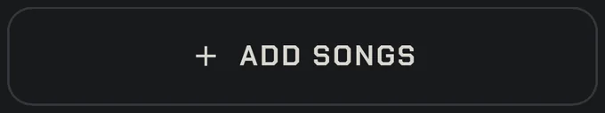
- Each song's ••• sets what happens after it: Stop, Segue (next song starts on the downbeat after the ending; tempo change instant or over 1–4 bars) or Click through (the click keeps time at the next song's tempo until you press PLAY). You can also set a tempo for this set only.
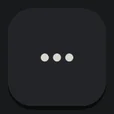
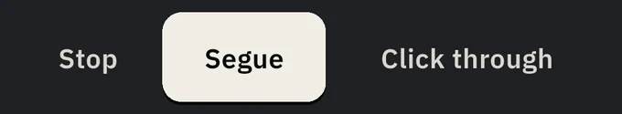
- PLAY SET. Between songs the big NEXT SONG key loads the next one with one tap.
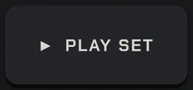
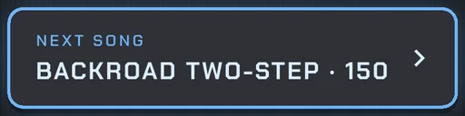

Gig mode
A pre-show checklist, then a locked stage screen.
- Open the setlist and tap 🎤 GIG MODE.
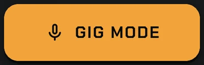
- Work down the list: Do Not Disturb (allow access once; it is restored after the gig), battery (warns under 40%), output (▶ plays a 2-second test hit with a level meter; Bluetooth gets a warning), screen (stays awake, brightness locked, stage lock) and setlist (all songs and kits loaded).
- START GIG opens Play on song 1 with stage lock on. (START ANYWAY appears if something isn't green; FIX LATER leaves.)
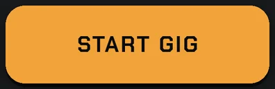
- After the show, back on the setlist, END GIG puts Do Not Disturb and brightness back how they were.
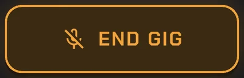

Foot pedals
Optional: the same actions as the on-screen keys, under your feet.
- Open Settings → Pedals & inputs. (After a few songs, Play also suggests it once; SET UP goes to the same place.)
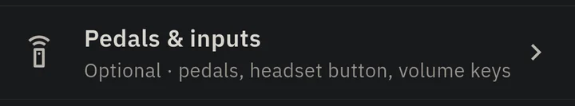
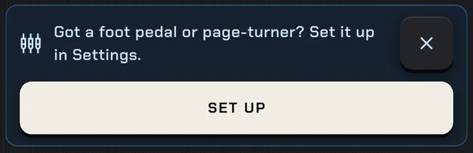
- Connect your pedal: Bluetooth MIDI, USB MIDI, or a page-turner that sends key presses (those work with no setup).
- Choose how many buttons it has: 2, 4 or MORE.
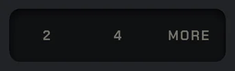
- Tap LEARN 4 BUTTONS (or a single row) and press each pedal button when asked.
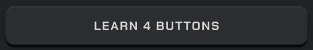
- The 4-button layout: 1 PLAY / END (PLAY when stopped, END when playing) · 2 FILL · 3 AUX (+2 BARS; hold = STOP; double-tap = PREV; TAP tempo when stopped) · 4 NEXT / END (tap = NEXT, hold = END). Two buttons: MAIN (tap FILL, hold NEXT, double-tap END, PLAY when stopped) and AUX.
- Check the On the Play screen preview (numbered badges show which button does what) and the Live test.
Turned the pedal off and on? It reconnects by itself within seconds.
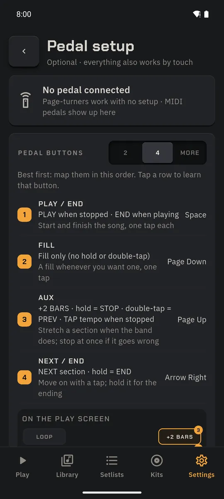
Headset button and volume keys
No pedal? Your earbuds have a button.
- In Settings → Pedals & inputs, the headset section maps the play/pause button of wired or Bluetooth headphones: PLAY when stopped and, while playing, FILL (or NEXT or +2 BARS, your choice). It works with the screen locked.
- Optional on Android: map the volume keys (up = main, down = aux) while Play is open. Off by default.
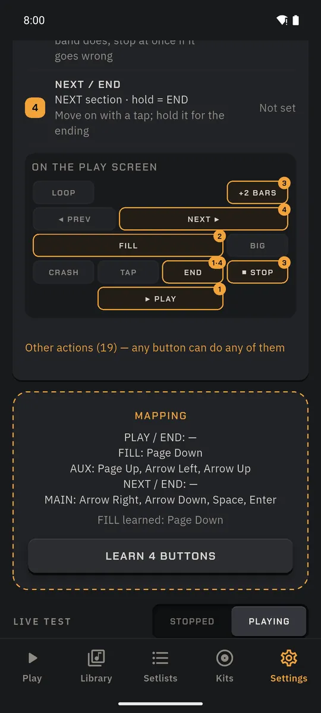